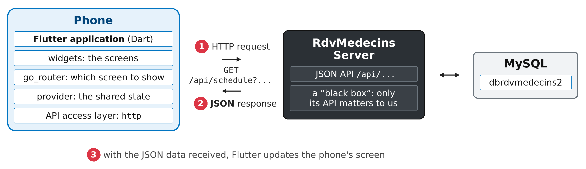

1. Introducción
El PDF del documento está AQUÍ.
Los códigos del documento están AQUÍ.
Este documento es obra de Claude, la IA de Anthropic. Sigue el curso “Introducción paso a paso al framework web React”, del cual toma el esquema, los ejemplos y el caso de estudio, pero cambiando el destino:
- En los cursos [React], [Vue.js] y [Angular], la aplicación se ejecuta en un navegador; se construye con HTML, CSS y [JavaScript];
- En este curso, la aplicación es una aplicación móvil, escrita con el framework [Flutter] y el lenguaje [Dart], que se ejecuta en un teléfono [Android]. El mismo código, sin ningún cambio, también genera una aplicación web (y una aplicación [Windows], [macOS], o [Linux] ).
El servidor, en cambio, sigue siendo el mismo: es el servidor JSON [RdvMedecins] de las lecciones anteriores, escrito con [NestJS]. Y las pantallas de la aplicación son las que los lectores de los otros cursos ya conocen (inicio de sesión con CAPTCHA, agenda del médico, ventana de citas, portal del paciente, gestión de médicos y clientes, creación de cuenta, inglés y francés), adaptadas a la pantalla de un teléfono.
El documento sigue la misma estructura que sus predecesores: primero, numerosos ejemplos breves, cada uno centrado en un concepto de [Flutter], seguidos de un caso de estudio completo: el cliente [Flutter] de la aplicación [RdvMedecins], con todos los archivos comentados por completo. Los 25 ejemplos llevan los mismos números que los del curso de [React]: los lectores que conocen [React], [Vue.js] o [Angular] encontrarán los mismos ejemplos, escritos al estilo de [Flutter].
Ya existe un curso sobre este tema: Un ejemplo cliente/servidor Flutter / NestJS (2026), que presenta un cliente completo desde el principio. Este documento difiere en su enfoque: aprendemos [Flutter] paso a paso, mediante ejemplos pequeños, antes de abordar el cliente completo; y el servidor se trata como una caja negra, de la cual solo nos interesan la API y el JSON.
Se supone un conocimiento básico del lenguaje [Dart]: estos fundamentos se tratan en el curso “Introducción al lenguaje Dart mediante ejemplos” (2026). Sin embargo, las características del lenguaje propias de [Flutter] (parámetros con nombre, clases, [async] / [await], colecciones, etc.) se repasan a lo largo de los ejemplos a medida que se utilizan.
1.1. El papel de Flutter en una aplicación cliente/servidor
La aplicación tiene dos partes, que se comunican entre sí únicamente mediante solicitudes HTTP:

- 1: La aplicación [Flutter], que se ejecuta en el teléfono, envía una solicitud HTTP al servidor, por ejemplo [GET /api/schedule?doctorId=1&day=2026-10-05];
- 2: El servidor responde con datos JSON: la agenda de ese médico para ese día. No genera ninguna página;
- 3: Con estos datos, [Flutter] actualiza la pantalla del teléfono.
Esta es exactamente la arquitectura de los clientes [React], [Vue.js] y [Angular]: la única diferencia es lo que genera la visualización. Mientras que un navegador construye una página a partir de HTML y CSS, [Flutter] dibuja cada píxel de la pantalla por sí mismo, con su propio motor gráfico. No utiliza los componentes del sistema (los botones de [Android] o de [iOS]): los imita o proporciona los suyos. Esto es lo que le permite mostrar la misma aplicación, píxel por píxel, en un teléfono [Android], en un [iPhone], en un navegador o en una computadora.
[Flutter] es un framework creado por [Google] y lanzado en 2018. Actualmente es el framework más utilizado para escribir aplicaciones móviles para [Android] y [iOS] con una única base de código. Se basa en tres conceptos fundamentales:
- todo es un widget: la pantalla se describe mediante un árbol de widgets, objetos que representan cada uno una parte de la interfaz, como un texto, un botón, un margen, una columna o una pantalla completa. Usted crea sus propios widgets ensamblando los que proporciona [Flutter];
- la interfaz es una función del estado: un widget tiene un método [build()] que describe qué mostrar según sus datos. Cuando los datos cambian ([setState()]), [Flutter] llama a [build()], compara el nuevo árbol con el anterior y vuelve a dibujar lo que ha cambiado. Nunca escribimos código que modifique la pantalla: describimos la pantalla a partir de su estado. Los lectores del curso de [React] reconocerán este principio: es el mismo que el de los componentes y [useState];
- un lenguaje, [Dart], compilado a código máquina para el teléfono (lo que da aplicaciones rápidas), o a [JavaScript] o [WebAssembly] para el navegador. Durante el desarrollo, [Dart] permite la recarga en caliente (hot reload): un cambio de código se aplica a la aplicación en ejecución en un segundo, sin perder su estado.
Al igual que [React], [Flutter] no es un framework “todo en uno” para comunicarse con un servidor: el cliente HTTP, el enrutador, el estado compartido y las traducciones los proporcionan paquetes (bibliotecas) publicados en el sitio web pub.dev. Este curso utiliza los paquetes recomendados en la documentación de [Flutter] y mantenidos, en su mayoría, por el propio equipo de [Flutter]: [http] (solicitudes HTTP), [go_router] (el enrutador), [provider] (estado compartido), [shared_preferences] (almacenamiento en el dispositivo), [intl] (fechas y números en cada idioma), [flutter_svg] (imágenes SVG).
1.2. Herramientas utilizadas
Los ejemplos se escribieron y probaron con las siguientes herramientas (su instalación se describe en el apéndice):
- SDK de [Flutter] 3.44, que incluye el SDK de [Dart] 3.12;
- el editor [Visual Studio Code] y su extensión [Flutter] (que también instala la extensión de [Dart]);
- [Android Studio], solo por su administrador de emuladores, y el SDK de [Android]: un emulador [Android] (un teléfono simulado en la computadora), o un teléfono [Android] real conectado a la computadora;
- el navegador [Chrome], para la versión web de las aplicaciones;
- el SGBD [MySQL] (o [MariaDB]), por ejemplo, el de [Laragon] en [Windows] , y [Node.js]: son necesarios para el servidor JSON, como se describe en el capítulo que lo presenta;
- la herramienta de línea de comandos [curl], que muestra las respuestas HTTP sin procesar.
Los paquetes utilizados son los de los archivos [pubspec.yaml]: [go_router] 16, [provider] 6, [http] 1.5, [shared_preferences] 2.5, [flutter_svg] 2, [intl], y los paquetes [flutter_localizations] y [flutter_test] incluidos con [Flutter].
1.3. Capturas de pantalla
Las capturas de pantalla de este documento se generaron automáticamente mediante pruebas de [Flutter] ([test/captures] en las carpetas de los proyectos): cada prueba lanza un ejemplo, interactúa con él como lo haría un usuario (ingresar texto, tocar botones) y luego indica al motor de [Flutter] que renderice la pantalla como un archivo de imagen con la resolución de un teléfono [Android] (1080 x 2340 píxeles). Son, por lo tanto, pantallas reales de la aplicación, renderizadas por el mismo motor que en el teléfono; los únicos elementos que faltan son la barra de estado del teléfono (hora, batería) y el teclado en pantalla. El capítulo del primer ejemplo muestra la misma aplicación ejecutándose en un emulador [Android].
1.4. Los ejemplos
El código de este documento está organizado en tres carpetas:
Los ejemplos forman un único proyecto [Flutter], con cada ejemplo ubicado en una carpeta dentro de [lib/]:
Las carpetas específicas de cada plataforma ([android/], [web/], [windows/]) no se proporcionan completas: son proyectos pequeños, [Android] (web) y [Windows], que [Flutter] puede generar y que dependen de la versión de [Flutter] instalada. Se generan una sola vez y luego se descargan los paquetes en una consola abierta en la carpeta [examples_flutter] (en [VS Code]: menú Terminal / Nueva terminal):
[flutter create .] (el punto indica la carpeta actual) completa el proyecto sin modificar los archivos existentes: se conserva el archivo [android/app/src/main/AndroidManifest.xml] proporcionado (véase el ejemplo 22). Si se omite este paso, [flutter run] falla en un teléfono con un mensaje engañoso: “Build failed due to use of deleted Android v1 embedding” ([Flutter] no encuentra el proyecto [Android] y supone que es muy antiguo).
Luego, ejecute un ejemplo especificando el archivo [main.dart] con la opción [-t] (de “target”, destino):
[flutter run] pregunta en qué dispositivo ejecutar la aplicación si encuentra varios (un emulador [Android], [Chrome], [Windows]...). Puede indicarlo con la opción [-d] (de “device”, dispositivo):
Mientras la aplicación se ejecuta, la consola acepta algunos comandos de una sola letra: r (hot reload: se aplican los cambios de código y se conserva el estado), R (hot restart: la aplicación se reinicia desde cero), q (detener). En [VS Code], también puede abrir el archivo del ejemplo [main.dart] y presionar F5; el dispositivo se selecciona entonces en la barra de estado, en la parte inferior derecha de la ventana.
Los ejemplos 22 a 25 consultan los servidores JSON y [RdvMedecins]: deberá tenerlos instalados y en ejecución, como se explica en el capítulo dedicado a ellos.
1.5. Contenido del documento
Capítulo | Contenido | Ejemplos |
Primeros pasos | Un proyecto Flutter, widgets, estado (setState), eventos, campos de entrada, un reducer, validación, Form y FormField, formato (intl) | 01 a 09 |
Widgets | parámetros, funciones como parámetros, composición (child, builders), ciclo de vida, datos heredados (InheritedWidget), comportamientos reutilizables (mixins, animaciones), cuadro de diálogo de confirmación | 10 a 16 |
Enrutamiento | go_router: rutas, parámetros, shell, redirecciones, guardias | 17 y 18 |
Procesamiento asíncrono y estado compartido | Future, Stream, temporizadores, debounce, respuestas caducadas, FutureBuilder, StreamBuilder, provider, shared_preferences | 19 y 20 |
Internacionalización | Una aplicación en francés e inglés | 21 |
El servidor, una caja negra | Instalación del servidor JSON, su API, ejemplos con curl | - |
Comunicación con el servidor | El paquete http, la dirección del servidor, la cookie de token, una capa de acceso a la API, un view model, errores del servidor | 22–25 |
Caso de estudio | El cliente Flutter de la aplicación RdvMedecins | - |
Despliegue | El cliente web compilado, servido por el servidor JSON; la aplicación Android | - |
Cada ejemplo se presenta con su código completo, comentado línea por línea, y capturas de pantalla de su ejecución. El propio código está ampliamente comentado: estos comentarios forman parte del curso.